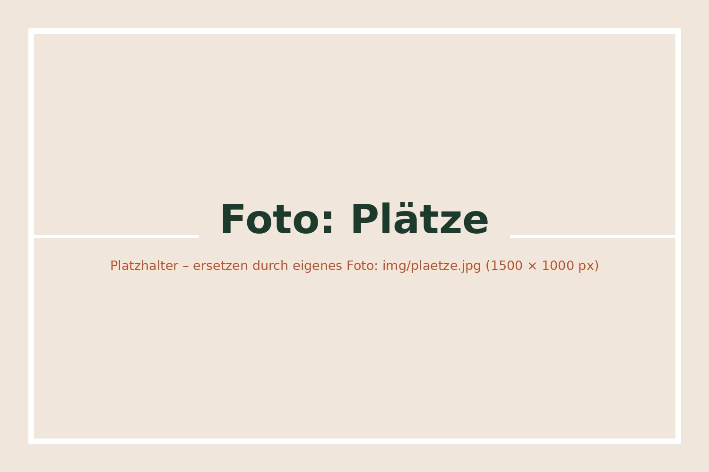
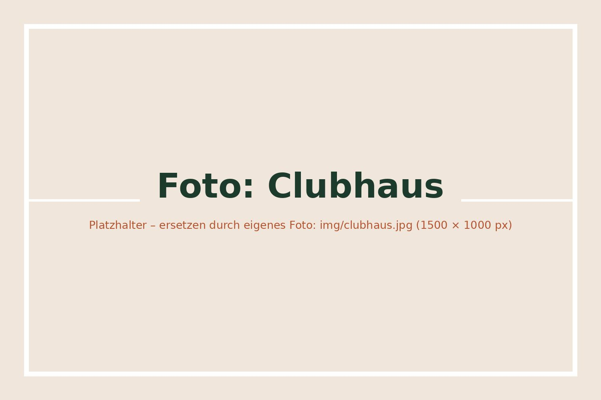
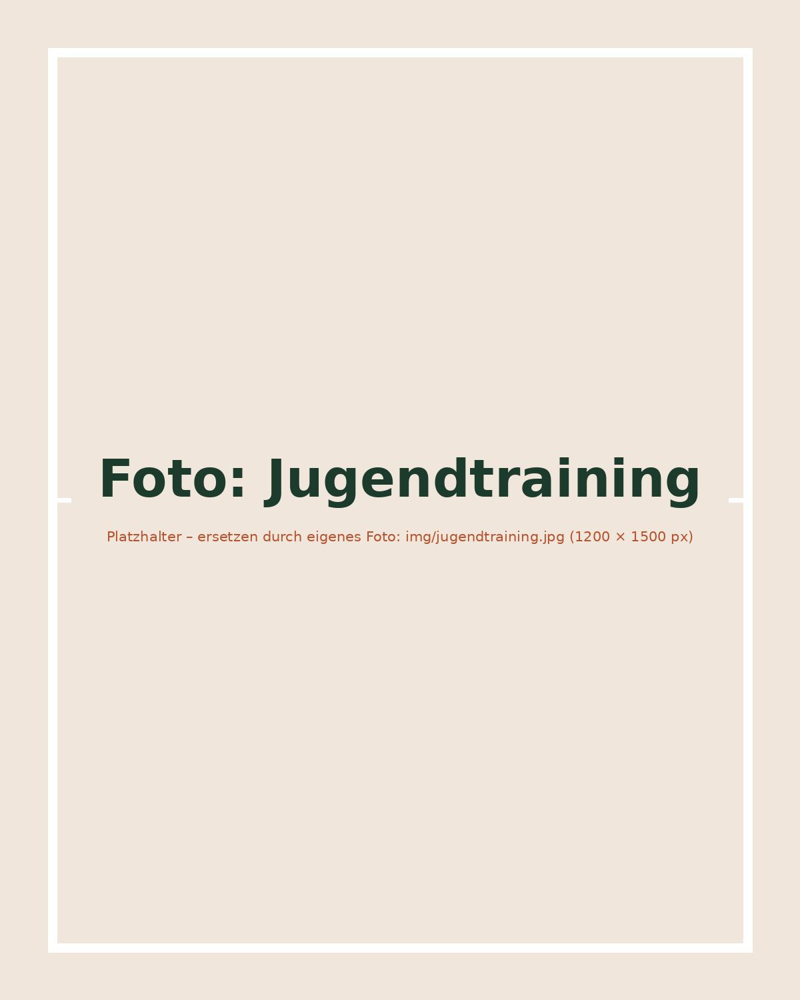
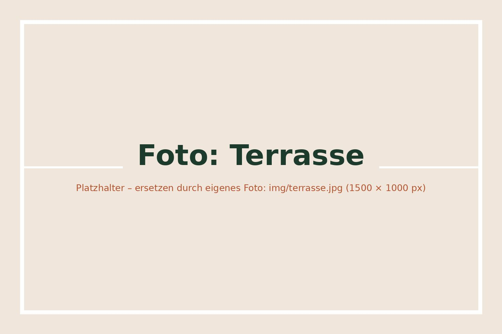

Cosima Tennis Club Tennis in München-Oberföhring
Sieben gepflegte Sandplätze in einer windstillen Senke an der Cosimastraße – mit bewirteter Clubterrasse und Blick auf alle Plätze.
Tennis in der Senke an der Cosimastraße
Der Cosima Tennis Club liegt in einer windstillen Senke neben der Cosimastraße in München-Oberföhring.
Unsere sieben sorgfältig gepflegten Sandplätze sind in eine grüne Landschaft eingebettet. Von der bewirteten Clubterrasse aus haben Sie einen schönen Blick auf die Plätze. Wir freuen uns auf Ihren Besuch!
Sieben Sandplätze im Grünen
- Windstille LageDie Senke schützt die Plätze vor Wind.
- Bewirtete ClubterrasseEssen und Getränke mit Blick auf die Plätze.
- Gut erreichbarTram und Bus halten in der Nähe, Parkplätze gibt es direkt auf der Anlage.


Öffnungszeiten und Anfahrt
Sommersaison
Täglich 8–22 Uhr
Gespielt werden kann während der gesamten Öffnungszeit, also von 8 bis 22 Uhr.
Mit Tram und Bus
- Tram 16
- Bus 50
- Bus 189
- Bus 232
Tram 16, Bus 50, 189 oder 232 bis zur Haltestelle St. Emmeram.
Mit dem Auto
Ausreichend Parkplätze direkt auf der Anlage.
Cosimastraße 284
81927 München
Termine
Feste, Turniere und Camps im Club. Die Anmeldung läuft über Sportision.
Training und Tennisschule
Ob Einstieg oder Turniervorbereitung: Für das Training im Club melden Sie sich online über Sportision an.
Kurse, Trainerteam und Preise stellt die Tennisschule Mazany auf ihrer eigenen Website vor.

Clubterrasse und Gastronomie
Nach dem Match auf die Terrasse: Von hier aus haben Sie alle sieben Plätze im Blick.
Für Essen und Getränke sorgt Ela Mama. Speisekarte und Öffnungszeiten der Gastronomie finden Sie auf der Website von Ela Mama.

Mitglied werden
Erwachsene zahlen im Eintrittsjahr einen Willkommensbeitrag von 190 €. Ein Kind oder Enkelkind eines erwachsenen Vollmitglieds spielt beitragsfrei.